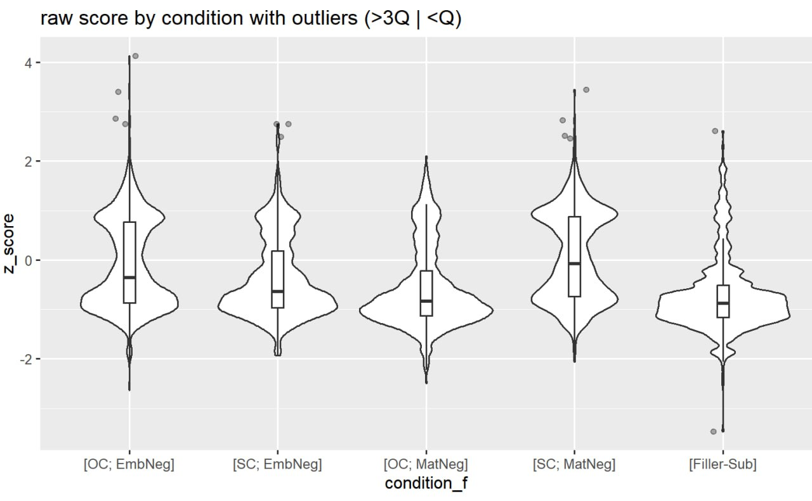

| waśaj-en | joŋtəs-ti | imi | woχ-əs |
| Вася-poss.2sg | шить-nfin.npst | женщина | звать-pst［3sg］ |
| 'Вася позвал женщину, которая шила (пока он звал)' |
3 Формлаба придумайте название
3.1 Введение
По мере накопления эмпирических знаний о языках России все более актуальным становится построение новых и уточнение существующих теоретических моделей с учетом этих знаний. В то же время разрабатываемые формальные модели служат более мощным и современным инструментом анализа эмпирических языковых данных. Одной из задач настоящего исследования является представление данных языков России с использованием формальных моделей (формальной семантики, синтаксиса, прагматики). Эта задача достаточно объемная и многоаспектная. В 2025 г. для моделирования были выбраны следующие классы явлений: кодирование временных отношений в языке, анафора и связывание, передвижение в полипредикации, согласование с нетривиальными контролерами, полярность (логические операторы в языке). Помимо этого, разрабатывались ресурсы, служащие эмпирической базой для разрабатываемых моделей.
Языки России, которые попали в сферу интереса, — это русский, хантыйский, абазинский, кильдинский саамский, мишарский татарский и др.
3.2 Семантика и синтаксис глагольных категорий
Одна из магистральных тем, которая разрабатывалась в 2025 году, включала в себя семантику и синтаксис глагольных категорий. К этой области относятся и собственно формы глагола, маркирующие время (финитные и нефинитные), так и лексические показатели времени – темпоральные наречия. Работа проводилась на материале кильдинского саамского и казымского хантыйского языков, собранном в 2022–2025 г. в ходе экспедиций в с. Ловоозеро Мурманской обл. (кильдинский саамский) и с. Казым Белоярского района ХМАО (казымский хантыйский). В саамском изучалась нефинитная форма со значением прошедшего времени, в хантыйском – взаимодействие интерпретации временных форм с временными наречиями. Для обоих явлений разработаны эксплицитные формальные модели.
3.2.1 Индексикальные наречия несовместимы с относительным временем: данные из казымского хантыйского
Исследование по хантыйскому языку было частью многолетнего проекта, целью которого является теоретическое моделирование вложенного времени в казымском диалекте хантыйского языка. Основной проблемой, которая анализировалось в этом году, были ограничения на сочетаемость вложенного (подчинённого) времени и индексикальных наречий. Данная группа наречий сочетается только с абсолютным, но не с относительным маркированием времени.
3.2.1.1 Время и временные наречия в казымском хантыйском
В казымском хантыйском относительные клаузы образуются при помощи причастных форм, которые могут быть маркированы либо прошедшим (NFIN.PST), либо непрошедшим (NFIN.NPST) нефинитным временем. Для нас релевантно то, что нефинитное время в относительных клаузах (ОК) может интерпретироваться и как абсолютное (т.е. упорядочивать время события ОК и время речи), и как относительное (т.е. упорядочивать время события ОК и время матричной клаузы). Ниже приведены примеры для прошедшего времени — в (1) проиллюстрирована относительная интерпретация, а в (2) — абсолютная.
| waśaj-en | joŋtəs-əm | imi | woχ-əs |
| Вася-poss.2sg | шить-nfin.pst | женщина | звать-pst［3sg］ |
| 'Вася позвал женщину, которая шила (до того, как он позвал)' |
［in jak-əm ewij-en］ siri ma wankʉtλi сейчас танцевать-nfin.pst девочка-dim.poss.2sg раньше я часто want-ijəλ-s-əm in šɛŋk ăntɵ видеть-freq-pst-poss.1sg сейчас вообще neg.ex ‘Девушку, которая только что танцевала, я раньше часто видел, а сейчас вообще не вижу’
3.2.1.2 Анализ
В результате было принято решение анализировать время в ОК как относительное, т.е. интерпретирующееся относительно ближайшего временного якоря и не привязанное к времени речи. Такой подход поддерживается независимыми синтаксическими данными о том, что ОК не содержат проекций выше TP [1; 2] и допущением о том, что временное местоимение t*, отсылающее ко времени речи, может вводиться только в верхних синтаксических проекциях ([3–5], среди прочих). Ниже приведены лексические вхождения, которые постулируются для двух нефинитных времён.
Нефинитное прошедшее: \[-əm^{c,g} = \lambda P\in D_{\langle i,t\rangle}.\lambda t \in D_i.\exists t'.[t' \prec t \land\ P(t')]\]
Нефинитное непрошедшее: \[-ti^{c,g} = \lambda P \in D_{\langle i,t\rangle}.\lambda t \in D_i. \exists t'[t' \succeq t \land\ P(t')]\]
С учётом изначального допущения, что время в ОК глубинно относительное, абсолютные интерпретации анализировались как подъём ИГ, содержащей ОК, в логической форме (однако в большинстве примеров мы можем видеть и синтаксическое передвижение ИГ ближе к левой границе клаузы). Анализ абсолютного времени ИГ как подъёма квантора был изначально предложен Т. Стоуэллом [5] для английских относительных клауз и позже М. О’Лири [7] для английских существительных. Согласно такому анализу, все ИГ глубинно интерпретируются с относительным временем. В случаях, когда возникает абсолютная интерпретация, ИГ передвигается в более высокие проекции, которые расположены выше финитного времени, но ниже местоимения t*. Таким образом, новым локальным якорем становится время речи, к которому отсылает t*. Рассмотрим относительную интерпретацию ОК, проиллюстрированную в предложении (5). Как показано в схеме (6), временной аргумент ИГ in situ локально связывается временем матричного предиката.
| pasaŋ-ən | ma | ［χʉλ | λɛw-əm］ | iki | šiwaλ-əs-əm |
| стол-loc | я | рыбу | есть-nfin.pst | человек | увидеть-pst-1sg |
| Временной аргумент: время матричной клаузы → поедание рыбы до времени видения | |||||
| 'Я увидела мужчину, кто (до этого) ел рыбу за столом' |
- Локальное связывание: \[t^* [ \lambda t_0 [(ɴ)ᴘꜱᴛ_{t_0}. \lambda t_j. [ \text{χuλ λɛwəm iki}^g(t_j) [\lambda x. [\text{šiwaλəsəm}^g(t_j)]]]]\\\text{рыбу едящего мужчину увидела}\]
Для абсолютного времени, показанного в (7), ситуация обратная. ИГ поднимается в домен времени речи и там локально связывается местоимением t*, см. схему (8).
| ［išńi | jeλpijən | χɵχətˊλˊ-əm］ | amp-en | mʉŋ | muλχatəλ | wɵnt-ən | want-s-ew |
| ［окно | до | бежать-nfin.pst］ | собака-poss.2sg | мы | вчера | лес-loc | увидеть-pst-1pl>sg |
| Временной аргумент: время речи → собака бегает под окнами до времени речи | |||||||
| 'Мы видели собаку, которая только что бегала под окнами, вчера в лесу' |
- Подъём и локальное связывание: \[t^* [ \lambda t_0 \text{išńi jeλpijən χɵχətˊλˊ-əm amp-en}^g(t_0) [(ɴ)ᴘꜱᴛ_{t_0}.\lambda t_j. [\lambda x. [\text{wantijəλsəm}^g(t_j)]]]]\\\text{под окнами бегавшая собака увидели}\]
Анализ абсолютного времени в ОК как подъёма кванторов поддерживается независимыми данными о том, что на время не влияет референциальный статус ИГ, но при этом, если ИГ связана более высоким квантором, это блокирует абсолютную интерпретацию. Рассмотрим пример (9, a), где ИГ с ОК связана квантором никто. Заметим, что маркирование непрошедшим временем, которое интерпретировалось бы как абсолютное, здесь недоступно.
- [Завтра в школе будет концерт. Нашим мамам сказали принести наши костюмы обратно в школу сразу после того, как закончится концерт.]
nɛm_χujat ［ńawrɛm-əλ {λɵmtəλ-əm / #λɵmət-ti}］ λɵmətsuχət imuχti никто ребёнок-poss.3sg носить-nfin.pst / носить-nfin.npst одежда сразу juχλi ăn tɵt-λ-aλ pɵs-ti χăj-λ-əλaλ обратно neg принести-npst-1sg>sg мыть-nfin.npst оставить-npst-3sg>nsg ‘Никто (из матерей) не принесёт обратно одежду, которую носил её ребёнок, они оставят её постирать’
| nɛm_χujat | ńawrɛm-əλ | #χaλewət | λɵmtəλ-əm | λɵmətsuχət |
| никто | ребёнок-poss.3sg | завтра | носить-nfin.pst | одежда |
| 'Никто (из матерей) не принесёт обратно одежду, которую (#завтра) носил её ребёнок, они оставят её постирать' |
При этом любопытно, что, в случае абсолютной интерпретации, в ОК не могут вставляться индексикальные временные наречия. См. пример (9, b), где относительное прошедшее время несовместимо с наречием χaλewət ‘завтра’. Также см. пример (10), где маркирование относительным временем недоступно при наличии наречия tămχatəλ ‘сегодня’. Анализ абсолютного времени как подъёма кванторов в своём текущем состоянии не предсказывает того, что наречия также влияют на интерпретацию времени, и требует некоторой доработки.
| ma | muλχătəλ | ［tămχatəλ | arij-əm | / | #ari-ti］ | ajλat | puχ | want-s-ɛm |
| я | вчера | сегодня | петь-nfin.pst | / | #петь-nfin.npst | молодой | сын | увидеть-pst-1sg>sg |
| 'Вчера я видела юношу, который сегодня пел [на концерте]' |
3.2.1.3 Анализ наречного сдвига
На материале английского языка, Э. Кешет [8] замечает, что существительное и его модификатор должны интерпретироваться относительно одного и того же времени. Поэтому пример (11, a) неграмматичен — сенатор не может быть одновременно и студентом Гарварда.
- [8]
- #In 1964, every U.S. Senator (then) at Harvard got straight A’s.
- Every U.S. Senator who was at Harvard in 1964 got straight A’s in college.
Для того, чтобы предсказать это свойство адноминальных модификаторов, Кешет [8; 9] вводит Обобщение об интерсективных предикатах (Intersective Predicate Generalization, IPG), приведённое в (12).
\[\text{Два предиката, соединённые при помощи Предикатной Модификации, не могут оцениваться в разных друг от друга временах или мирах.}\] Заметим, что интерсективные модификаторы включают в себя не только прилагательные, но и наречия. Если уточнить определение предикатной модификации, то IPG может также применяться и к случаям, когда наречие модифицирует временной аргумент у клаузы, см. имплементацию в [10]. Мы будем использовать обобщённую предикатную модификацию, которую вводит Кешет.
\(⊓\) Operator Для любых функций \(f\) и \(g\) с объединимыми типами, \(f ⊓ g =\)
- \(f ∧ g\), если \(τ = t\), или
- \(λa ∈ Dα. f(a) ⊓ g(a)\), если \(τ = <α, β>\). [8]
- (Обобщённая) Предикатная Модификация Если \(α\) — ветвящийся узел, \({β, γ}\) — множество дочерей \(α\) и \(β\) и$ γ $ являются функциями с объединимыми типами \(τ\), тогда \(α = β ⊓ γ\). [8]
Тем самым, использованный объяснительный аппарат позволяет предсказать, что относительное время несовместимо с индексикальными наречиями, т.к. оно связано локально доступным временем матричной клаузы, а наречия интерпретируются относительно времени речи. При этом в сентенциальных актантах этот механизм работает менее эффективно, так как в них возможны конфигурации, где сосуществуют относительное время и индексикальные наречия. Дальнейшая работа над темой, как мы надеемся, позволит решить вопрос объяснения и для этой группы явлений.
3.2.2 Семантика причастия прошедшего времени в кильдинском саамском языке
3.2.2.1 Введение
В кильдинском саамском языке (< саамские < уральские) есть нефинитная глагольная форма на -(m)a (также у нее есть диалектный вариант -(m)eɲč), встречающаяся в различных контекстах: она может использоваться в качестве приименного модификатора, или причастия (15); будучи в соседстве с отрицанием, она может маркировать коннегатив прошедшего времени (16); а также она встречается в перфекте (17) и плюсквамперфекте (18). В нашем исследовании мы предлагаем моносемический анализ для формы на -(m)a.
munn janda and-a ɲaallks-et’ udl-a lɨhk-ma 1sg.nom завтра дать-npst.1sg сладкое-acc.pl быстро-comp делать-ptcp.pst paarn-et’ ребенок-dat.pl {Говорящий дает детям задание. Завтра он спросит, кто успел выполнить его быстрее других.} ‘Я дам сладости тому ребенку, который сделал (это) быстрее.’
| munn | emm | pued | / | puadd-ma |
| 1sg.nom | neg.1sg | прийти.npst.cng | / | прийти-ptcp.pst |
| 'Я не приду / не пришел.' |
| soonn | l'ii | puadd-ma | peer̥'r̥'t'-e |
| 3sg.nom | быть.npst.3sg | прийти-ptcp.pst | дом-dat.sg |
| 'Он пришел.' |
| soonn | l'aajj | puadd-ma | peer̥'r̥'t'-e |
| 3sg.nom | быть.pst.3sg | прийти-ptcp.pst | дом-dat.sg |
| 'Он пришел (до какого-то момента в прошлом).' |
3.2.2.2 Семантика формы на -(m)a
Общий элемент значения -(m)a в (15)-(18) – это семантика предшествования: в (15) событие, маркированное -(m)a, предшествует некоторой референциальной точке, заданной матричным предикатом; в (16) показатель -(m)a задает предшествование моменту речи; кросс-лингвистически в (плюсквам)перфекте тоже часто наблюдается семантика предшествования некоторой референциальной точке (среди многих других [11–15]). В случае перфекта (17) референциальной точкой можно, упрощая, считать момент речи, а в случае плюсквамперфекта (18) – какую-то другую точку в прошлом, заданную контекстом.
Далее мы будем, следуя [11] и [12], формулировать свои наблюдения в терминах неорейхенбахского подхода к временной семантике. Для нас будут релевантны четыре временные точки: время события (event time, далее ET), топикальное время (topic time, далее TT), время перспективы (perspective time, далее PT) и время речи (utterance time, далее UT).
В описании выше мы упомянули, что в примерах с отрицанием типа (16) -(m)a может располагать событие относительно момента речи. В таком случае его поведение похоже на абсолютное прошедшее время, так как стандартно считается, что абсолютное прошедшее время располагает TT до UT [11; 16]. Однако другие употребления -(m)a плохо сочетаются с анализом этого показателя как показателя абсолютного времени. Так, в примере (13) событие, маркированное -(m)a, располагается на оси времени после момента речи (но до референциальной точки в будущем), что не дает нам считать -(m)a абсолютным прошедшим временем. Пример (18), как и другие примеры с плюсквамперфектом, также говорит против такого анализа, так как в таких примерах нам пришлось бы считать, что в одной клаузе одновременно присутствуют два (самостоятельных) показателя абсолютного времени (на копуле и на причастии), чего, насколько нам известно, не зафиксировано в других языках (см. также [16]). Таким образом, так как нашей целью является моносемический анализ -(m)a, мы считаем, что -(m)a не может маркировать абсолютное прошедшее время (в том числе и в примерах с отрицанием типа (16)).
У нас остается два варианта того, чем может быть -(m)a: это либо относительное время, либо какой-то аспект предшествования (anteriority aspect). Различие между этими двумя категориями не такое очевидное. Единственная известная нам работа, которая предпринимает попытку их различить – [16]. В качестве главного критерия в этой работе рассматривается способность показателя сочетаться в рамках одной клаузы с относительным или абсолютным временем. Если показатель обладает такой способностью, то он не может являться показателем времени, так как в одной клаузе не может одновременно присутствовать более одного показателя времени, не важно – относительного или абсолютного. Как мы видели в примере с плюсквамперфектом (18), -(m)a спокойно сосуществует с матричным глаголом прошедшего времени. Мы, вслед за другими исследователями (среди многих других [17; 18], придерживаемся интуиции, что аналитический (плюсквам)перфект является моноклаузальной конструкцией. Таким образом, остается единственная альтернатива: -(m)a является ничем иным, как упорядочивающим аспектом (ordering aspect), а именно аспектом предшествования.
Соответственно, следующий вопрос, который необходимо решить, чтобы дать точную семантику -(m)a, – какими временными точками/интервалами оперирует -(m)a? Мы предполагаем, что эти точки не фиксированы в значении -(m)a. Как сдвигаемый временной интервал, так и референциальная точка задаются из контекста (синтаксического и прагматического). В пользу этого взгляда говорят примеры типа (19). В этом примере мы видим отрицание плюсквамперфекта и, соответственно, два -(m)a причастия. Если бы -(m)a строго задавало предшествование времени ситуации референциальной точке, то пришлось бы считать, что в этом примере одно и то же время ситуации дважды располагается до какой-то/каких-то референциальных точек. Такая семантика выглядит избыточной. Если же считать, что только одно из употреблений -(m)a семантически наполнено, то придется создать отдельное правило, по которому -(m)a- лишалось бы своей семантики и делало бы это только в таком контексте. Нам кажется это излишним усложнением системы, поэтому мы предлагаем более простое решение – вводить оба интервала в виде переменных, которые заполняются в соответствии с синтаксическим и прагматическим контекстом.
- [19: 14]
| a | sɨjj | voof's'e | jev | l'iijj-ma | m'iin | saajjm-a | pɒbbx-a |
| intj | 3pl.nom | вовсе | neg.3pl | быть-ptcp.pst | 1pl.gen | сеть-dat.sg | попасть-ptcp.pst |
| 'Они не попали в нашу сеть.' |
Если в клаузе есть только один показатель -(m)a, он обозначает отношение предшествования TT ≺ PT. Отношение между РТ и UT задается маркером абсолютного времени (например, маркером прошедшего времени на копуле в (18)). Согласно [12], время перспективы является подтипом топикальных времен: высказывания, содержащие и ТТ, и РТ, одновременно отсылают к двум топикальным временам.
В таком случае в качестве семантики -(m)a мы предлагаем именно предшествование топикального времени времени перспективы, потому что и экспериенциальное, и эвиденциальное прочтения перфекта допускают как перфективный, так и имперфективный аспектуальный ракурс: (20, a) иллюстрирует перфективный, а (20, b) – имперфективный аспектуальный ракурс при эвиденциальном прочтении перфекта. Вслед за [11; 12; 20] и многими другими, мы считаем, что аспектуальный ракурс определяется отношением между ET и TT. Например, в случае перфективного видового ракурса (в одном из его вариантов) время ситуации должно быть целиком включено в топикальное время (ЕТ ⊆ TT). Если бы -(m)a обозначало отношение между ЕТ и ТТ (а именно ЕT ≺ ТT), то тогда на местоположение ЕТ одновременно накладывалось бы два ограничения ЕТ ⊆ TT (от аспектуального оператора) и ЕT ≺ ТT (от -(m)a), что вело бы к противоречию (см. более подробное обсуждение семантики перфекта, предложенной Кляйном, в [12; 21]. Поэтому мы считаем, что, когда в клаузе есть только один показатель -(m)a, он задает отношение TT ≺ PT.
munn puud’d’-e peer̥‘r̥’t’-e paarrn-e l’ee-v 1sg.nom прийти-pst.1sg дом-dat.sg ребенок-nom.pl быть-npst.3pl ɲuččk-ma прыгать-ptcp.pst b. {Когда говорящий пришел домой, он увидел, как пыль сыпется с потолка.} Я пришел домой, дети прыгали наверху (во время моего прихода). ‘a. {Когда говорящий пришел домой, он увидел следы от ботинок на диване.} Я пришел домой, [оказалось] дети прыгали на диване (какое-то время до моего прихода).’
В предложениях с отрицанием плюсквамперфекта (с двумя -(m)a) значение обоих -(m)a зависит от структурного контекста: более высокое -(m)a устанавливает отношение между “более высокими” (такими, которые вводятся позже в структуре) временными интервалами. Если говорить схематично, структурно более низкое -(m)a устанавливает отношение x ≺ y, а структурно более высокое -(m)a, в свою очередь, берет правый интервал из этого отношения и устанавливает отношение предшествования этого интервала (интервала y) третьему интервалу z (y ≺ z). Отношение между какими именно временными интервалами устанавливает каждое из причастий (например, ЕT ≺ ТT или TT ≺ PT) – вопрос, который требует дополнительной проверки. Сейчас нам релевантно лишь то, что примеры с отрицанием плюсквамперфекта явно показывают, что временные интервалы (и первый, и второй), между которыми -(m)a устанавливает отношение предшествования, строго не заданы и должны варьироваться в соответствии с синтаксическим и прагматическим контекстом. Поэтому, как было сказано выше, мы предлагаем, что -(m)a задает отношение предшествования между двумя переменными.
Мы предлагаем, что -(m)a является упорядочивающим аспектом (тип <it, it>) и вводит отношение предшествования между двумя переменными (21). Мы моделируем это отношение как пресуппозицию, следуя стандартному анализу прошедшего времени (см., например, [22]).
- \[ -(m)a ^{g, c} = λP_{<i, t>}. λt: g(t’) ≺ t. P(g(t’))\]
В качестве левого члена отношения -(m)a вводит темпоральное местоимение, так как прошедшие коннегативы типа (16) не имеют экспериенциального прочтения (22), которое ожидалось бы, если бы -(m)a экзистенциально связывало левый временной интервал [16].
| – | toonn | kues's'-l'aaɲč | poorr-ex' | luemmn-et'ma |
| – | 2sg.nom | когда-indef.ref | есть-pst.2sg | морошка-acc.pl |
| '– Ты когда-нибудь ел морошку?.' |
| – | #emm | poorr-ma |
| – | neg.1sg | есть-ptcp.pst |
| b. получ.: #Не ел [в какой-то определенный момент времени]. | ||
| 'a. ожид.: – Не ел.' |
В (22) использование прошедшего коннегатива влечет за собой интерпретацию, согласно которой отвечающий утверждает тот факт, что он не съел морошку в какой-то определенной ситуации, а не то, что он ни разу не пробовал ее за всю свою жизнь.
Аналогичное поведение мы можем наблюдать у -(m)a, которое выступает в роли приименного модификатора. Контекст в (23) требует наличие у мальчика опыта точения топора, то есть требуется, чтобы он заточил топор хотя бы один раз в жизни. Однако -(m)a причастие не может употребляться в таком контексте. Вместо этого у такого предложения получается одна из возможных интерпретаций, согласно которой мальчик совсем недавно поточил какой-то топор и он сейчас все еще острый. Даже если из этого следует, что у мальчика есть релевантный опыт, такое предложение не может служить ответом на подобный вопрос, так как в нем утверждается лишь факт осуществления события в определенный момент в прошлом.
| #tam'p'e | l'ii | ɒɒkkše | taahkt-ma | paar'r'š'a |
| там | быть.npst.3sg | топор.acc.sg | точить-ptcp.pst | мальчик.nom.sg |
| получ.: Вот там вот [стоит] мальчик, который заточил топор. | ||||
| 'ожид.: {Мне нужно, чтобы кто-нибудь поточил мой топор. Кто когда-либо это делал?} Вот там [стоит] мальчик, точивший [когда-то] топор. {Он умеет это делать.}.' |
Интерпретации, которые получаются в (22)-(23), демонстрируют анафорическую природу причастия -(m)a, так как в обоих случаях топикальным временем является какой-то определенный (например, контекстно заданный) временной интервал в прошлом, в котором произошло соответствующее событие. Таким образом, анафорические интерпретации (22)-(23) подкрепляют использование в семантике (21) темпорального местоимения в качестве левого члена отношения (ср. анализ английского времени в [23], который базируется на идее [24]).
Тут следует заметить, что анафоричность доступных интерпретаций (22)-(23) нельзя свести к требованию на сохранение лексического результата, из которого следует существование конкретного предшествующего события. Предложение (23), помимо интерпретации с сохранением результата, может иметь такую интерпретацию, при которой результат не сохраняется в момент речи, то есть мальчик заточил топор в какой-то момент в прошлом, например, на прошлой неделе, а в момент речи топор уже является тупым, так как его много использовали. В данном случае утверждается лишь факт осуществления соответствующего события в определенный момент в прошлом. То же самое верно и для предложений с отрицанием: в (22) утверждается, что в определенный момент в прошлом имело место событие, когда говорящий не съел морошку, причем результат этого события может как существовать, так и не существовать в момент речи. Таким образом, мы приходим к выводу, что -(m)a действительно вводит теморальное местоимение в качестве левого члена отношения предшествования.
3.2.2.3 Выводы
Анализ семантики причастия прошедшего времени в кильдинском саамском языке позволил прийти к нескольким важным выводам. Во-первых, было доказано, что это причастие не может обозначать время в конвенциональном смысле (ни относительное, ни абсолютное). В литературе существует анализ причастия прошедшего времени как нефинитного прошедшего времени [25]. Мы опускаем дискуссию о разнице между нашим анализом и анализом М. Юльен в целях экономии места. Во-вторых, разработан семантический анализ -(m)a, успешно покрывающий все употребления этого показателя – маркера упорядочивающего аспекта, который вводит отношение предшествования. Детали композиции мы также опускаем в целях экономии места. При композициональном анализе семантики предложениий типа (15) проблем возникнуть не должно: причастие обозначает предшествование точке, заданной матричным временем. Для интерпретации отрицания (16) нам придется обратиться к анализам безвременных языков (см. обзор в [26]), так как в рамках нашего анализа в клаузах с отрицанием нет выраженных маркеров финитного времени. Одной из конкретных альтернатив можно считать анализ языка лиллуэт из статьи [27], где предлагается ввести нулевое настоящее/непрошедшее время. В случае перфекта (17) мы предполагаем, что перфектный оператор (выраженный копулой) вводит результирующее состояние в духе [13], которое заполняется в соответствии с определенным прочтением перфекта. На настоящий момент мы избегаем конкретных предположений о том, как складывается значение плюсквамперфекта (18), так как мы пока достоверно не знаем детали семантики этой формы.
3.3 Синтаксические передвижения в полипредикации
3.3.1 Введение
Одной из самых базовых операций в формальной лингвистике (помимо правил, ответственных за построение синтаксических структур) являются кросс-клаузальные нелокальные взаимодействия, также известные как синтаксическое передвижение. В отчётном периоде его свойства изучались на примере субъектов вложенных клауз в мишарском диалекте татарского языка, маркированных именительным и винительным падежом.
3.3.2 Маркирование субъекта вложенной клаузы при скрэмблинге в мишарском диалекте татарского языка
В тюркских языках возможность дистантного скрэмблинга часто варьируется в зависимости от падежа субъекта вложенной клаузы. Данное исследование было посвящено изучению взаимодействия дистантного скрэмблинга и дифференцированного маркирования субъекта в мишарском диалекте татарского языка.
Целью работы является проверка на материале мишарского татарского гипотез, выдвинутых в работе [28] на материале балкарского языка. Авторы утверждают, что возможность скрэмблинга субъекта и других элементов вложенной клаузы (например, прямого объекта) зависит от того, маркирован ли субъект номинативом или аккузативом, и связывают это с различными структурными позициями, которые занимают субъекты в зависимости от их падежа. Данные были собраны в селе Большое Рыбушкино во время экспедиции в мае 2025 года.
3.3.2.1 Предыдущие исследования: данные балкарского языка
[28] исследуют связь между падежом субъекта и возможностью скрэмблинга в балкарском языке. В работе рассматриваются номинализации, субъекты которых могут быть номинативными, аккузативными и генитивными (последние для нас нерелевантны).
| ustaz-ø | fatima-nɨ | sabiji-ø | alma-nɨ | aša-ʁan-ɨ-n | ešit-ti |
| учитель-nom | Фатима-gen | ребёнок-nom | яблоко-acc | есть-nfut-agr-acc | слышать-pst |
| 'Учитель подумал, что ребёнок Фатимы съел яблоко' |
| ustaz-ø | fatima-nɨ | sabiji-n | alma-nɨ | aša-ʁan-ɨ-n | ešit-ti |
| учитель-nom | Фатима-gen | ребёнок-acc | яблоко-acc | есть-nfut-agr-acc | слышать-pst |
| 'Учитель подумал, что ребёнок Фатимы съел яблоко' |
Авторы демонстрируют следующую закономерность: cкрэмблинг субъекта возможен для аккузативного субъекта, но невозможен для номинативного. Скрэмблинг прямого объекта возможен из клауз с номинативными, но не с аккузативными субъектами. Ниже изложены допущения, принимаемые в анализе авторов.
- Структурные позиции субъектов: Номинативный субъект находится в позиции [Spec, TP] внутри вложенной клаузы. Аккузативный субъект, передвигается в [Spec, CP], минуя [Spec, TP].
- Phase Impenetrability Condition [29]: Чтобы составляющая могла покинуть вложенную клаузу, она должна сначала переместиться на её границу (в [Spec, CP]). Это делает её доступной для дальнейших операций в матричной клаузе.
Номинативный субъект не может переместиться в [Spec, CP] из-за нарушения условия анти-локальности [30; 31], которое запрещает слишком короткие передвижения (например, из [Spec, TP] в [Spec, CP]). Следовательно, его последующее передвижение в матричную кзаузу невозможно.
Прямой объект при аккузативном субъекте не может переместиться в самый высокий [Spec, CP], потому что эта позиция уже занята субъектом. Согласно принципу “tucking in” [32], при перемещении нескольких элементов в спецификаторы одной вершины первой передвигается самый высокий из них, а все последующие занимают более низкие спецификаторы. Поскольку аккузативный субъект занимает [Spec, CP] первым, прямой объект не может передвинуться в матричную клаузу без предварительного передвижения субъекта.
3.3.2.2 Дифференцированное маркирование субъекта в мишарском татарском
Прежде чем проверять предсказания анализа [28], рассмотрим конструкции с дифференцированным маркированием субъекта в мишарском татарском. Известно, что в финитных вложенных клаузах с комплементайзером diep и с матричным глаголом глаголом di- ‘сказать’ субъект может быть как номинативным, так и аккузативным (см. [33]).
| alsu | marat(-nɤ) | kit-te | diep | ujla-dɤ |
| Алсу | Марат(-acc) | уйти-pst | comp | думать-pst |
| 'Алсу подумала, что Марат ушёл' |
Есть свидетельства, что аккузативные субъекты занимают иную, более высокую позицию в структуре, чем номинативные. В частности, ИГ в матричной клаузе может служить антецедентом для рефлексива в позиции субъекта вложенной клаузы только если он аккузативный.
| marat | üz-e*(-n) | jaxšɤ | ešlä-de | diep | atj-tɤ |
| Марат | сам-3*(-acc) | хорошо | работать-pst | comp | сказать-pst |
| 'Марат сказал, что он хорошо поработал' |
Эти и другие данные (см. [34]) позволяют сделать вывод, что в мишарском татарском, как и в балкарском, аккузативные субъекты занимают позицию [Spec, CP], в то время как номинативные располагаются в [Spec, TP].
3.3.2.3 Дистантный скрэмблинг в мишарском татарском
Скрэмблинг субъекта в матричную клаузу возможен только для аккузативных субъектов.
| marat*(-nɤ) | alsu | kit-te | diep | ujla-dɤ |
| Марат*(-acc) | Алсу | уйти-pst | comp | думать-pst |
| 'Алсу подумала, что Марат ушёл' |
Это ожидаемо, если номинативный субъект не может занять [Spec, CP] вследствие анти-локальности, как утверждают [28]. При скрэмблинге других элементов вложенной клаузы наблюдается ассимметрия между прямыми объектами и PP-адъюнктами. Скрэмблинг прямых объектов возможен только если субъект вложенной клаузы номинативный, в то время как скрэмблинг PP-адъюнктов доступен независимо от падежа субъекта.
| mašina-nɤ | alsu | marat(*-nɤ) | sat-tɤ | diep | ujl-ɤj |
| машина-acc | Алсу | Марат(*-acc) | продать-pst | comp | думать-ipfv |
| 'Алсу думает, что Марат продал машину' |
| uram-nan | alsu | marat(-nɤ) | akca | tap-tɤ | diep | ujlа-dɤ |
| улица-abl | Алсу | Марат(-acc) | деньги | найти-pst | comp | думать-pst |
| 'Алсу подумала, что Марат нашёл деньги на улице' |
Дополнительно была проверена одна гипотеза, которая могла бы потенциально объяснить, почему дистантный скрэмблинг возможен с аккузативными субъектами. До сих пор мы исходили из допущения, что все предложения типа (28) с аккузативными аргументами имеют структуру с подъёмом, где ИГ попрождается в позиции субъекта, после чего передвигается в [Spec, CP], получая аккузатив. Однако, в мишарском татарском также засвидетельствованы предложения с пролепсисом – конструкцией, где в матричной клаузе порождается аккузативная ИГ, коиндексированная с местоимением во вложенной клаузе (оно может быть нулевым).
| alsu | marat-nɤ | (ul) | kit-te | diep | ujla-dɤ |
| Алсу | Марат-acc | он | уйти-pst | comp | думать-pst |
| Букв.: Алсу подумала про Марата, что он ушёл | |||||
| 'Алсу подумала, что Марат ушёл' |
Для проверки теории [28] необходимо рассматривать именно структуры с подъёмом. Для различения двух структур мы будем использовать местоимения отрицательной полярности в позиции субъекта вложенной клаузы, которые будут лицензироваться вложенным отрицанием. В мишарском татарском такие местоимения в матричной клаузе не могут лицензироваться отрицанием вложенной клаузы [33]. Таким образом, этот тест позволяет рассматривать именно структуры, где аккузативный аргумент порождается как субъект вложенной клаузы. Показательность нашей диагностики подтверждается примерами типа (29), где однозначно задействована структура с пролепсисом. В таких предложениях местоимение отрицательной полярности в позиции аргумента матричной клаузы не может лицензироваться вложенным отрицанием.
| *alsu | kem-ne | dä | ul | kil-mä-de | diep | ujl-ɤj |
| Алсу | кто-acc | emph | он | прийти-neg-pst | comp | думать-ipfv |
| 'Алсу думает, что никто не пришёл' |
При этом, отрицание матричной клаузы ожидаемым образом может лицензировать местоимение отрицательной полярности в позиции пролептического аргумента.
| alsu | kem-ne | dä | (ul) | kil-de | diep | ujla-m-ɤj |
| Алсу | кто-acc | emph | он | прийти-pst | comp | думать-neg-ipfv |
| Букв.: Алсу ни про кого не думает, что (он) пришёл | ||||||
| 'Алсу думает, что никто не пришёл' |
Итак, местоимения отрицательной полярности точно являются субъектами вложенной клаузы, когда лицензируются вложенным отрицанием. Тогда, следуя [28], можно ожидать, что в таких предложениях дистантный скрэмблинг несубъектных составляющих будет невозможен, если субъект аккузативный. Однако ср. (31), в котором дистантный скрэмблинг возможен.
| däres-kä | ukɤtučɤ | kem-ne | dä | kil-mä-de | di-de |
| урок-dat | учитель | кто-acc | emph | прийти-neg-pst | сказать-pst |
| 'Учитель сказал, что никто не пришёл на урок' |
3.3.3 Заключение
В области дистантных передвижений в полипредикации было проведено детальное исследование дистантного скрэмблинга в мишарском диалекте татарского языка в контексте дифференцированного маркирования субъекта. Мы показали, что дистантный скрэмблинг некоторых элементов возможен вне зависимости от падежа субъекта вложенной клаузы, что не предсказывается существующим анализом, предложенным для балкарских данных. Было также показано, что грамматичность примеров нельзя объяснить, предположив для них альтернативную структуру, где аккузативный “субъект” на самом деле порождается в матричной клаузе. Таким образом, новый материал мишарского татарского служит эмпирической базы для уточнения существующих подходов к анализу.
3.4 Грамматические свойства логических операторов
Отрицание и его взаимодействие с различными классами выражений — одна из центральных тем лингвистической теории, лежащая в основе целого ряда формальных моделей. В отчётном периоде в рамках проекта исследовалось поведение местоимений на -либо в русском языке, дистантное лицензирование отрицательных местоимений в абазинском языке и неканонические случаи лицензирования отрицательных местоимений в русском языке. Данные были собраны методом элицитации (в том числе в полевых условиях в рамках Абазинской лингвистической экспедиции под руководством доцента Школы лингвистики Ю. А. Ландера) и в рамках формального эксперимента на оценку приемлемости.
3.4.1 Местоимения на -либо как нереферентные неопределённые местоимения
Русские неопределённые местоимения на -либо (например, кто-либо, что-либо) принято относить к отрицательно поляризованным единицам [35–38]. Это означает, что они обычно употребляются в контекстах нисходящего следования, но не в утвердительных перфективных контекстах. Однако наблюдается парадокс: хотя, согласно [39], единицы отрицательной полярности должны лицензироваться под отрицанием (самым сильным из таких контекстов) местоимения на -либо в этой позиции недопустимы (35, c). Эта проблема известна как «загадка бублика» («the Bagel problem», [37]).
- Если вы кого-либо встретите, позвоните мне. [37, P. (10b)]
- *Я видел что-либо. [37, P. (8)]
- *Он кого-либо не встретил. [37, P. (11)]
Существующее объяснение [37] связывает невозможность употребления -либо под отрицанием с конкуренцией с отрицательными местоимениями на ни- (например, никто). Однако у этой гипотезы есть недостатки. Во-первых, в некоторых случаях местоимения на -либо и ни- в некоторых контекстах взаимозаменяемы, что противоречит идее обязательной конкуренции. Это происходит при атрибутивном использовании (например, какой-либо/никакой) или при наличии послеименного модификатора.
- Иван не видел там каких-либо студентов. [35: 43]
- Между тем, итальянки не смогли назвать кого-либо, кто лично был свидетелем феномена. (НКРЯ/Центральные СМИ)
Мы считаем, что «загадка бублика» может быть разрешена, если отказаться от трактовки местоимений на -либо как отрицательно поляризованных единиц. Так, Пример (37) показывает, что местоимения на -либо могут лицензироваться в модальных и императивных контекстах, что противоречит данным [36].
- Сейчас можно покупать что-либо внутри приложений. Сами приложения скачивать нельзя. (НКРЯ/Центральные СМИ)
- Если есть возможность, пошлите кого-либо в ближайший населенный пункт или лесничество за помощью. (НКРЯ/Региональные СМИ)
Предлагаемая гипотеза состоит в том, что ключевым свойством местоимений на -либо природе является нереферентность. Они лицензируются не самим по себе контекстом нисходящего следования, а наличием квантифицирующего оператора, который может быть явным или скрытым. В слабых контекстах нисходящего следования, как в Примере (35, a), мы предполагаем наличие нулевого модального оператора вслед за [40]. Употребление -либо в Примере (36) также объясняется через модальность. Наличие послеименного модификатора создаёт условия для скрытого модального оператора [40; 41], который и лицензирует местоимение на -либо. Аналогичный механизм работает для английского any в конструкциях типа «John saw any student that was around». Обращает на себя внимание возможность замены местоимения серии -либо на местоимение серии -то, которое является положительно поляризованной единицей, то есть не может находиться в сфере действия отрицания [42].
- Между тем, итальянки не смогли назвать кого-то, кто лично был свидетелем феномена.
Таким образом, местоимения на -либо скорее следует относить к классу нереферентных неопределённых местоимений, а не к классу полноценных единиц отрицательной полярности. Это объясняет их грамматичность в модальных контекстах и условных предложениях и неграмматичность под отрицанием и в утвердительных предложениях.
3.4.2 Дистантное лицензирование отрицательных местоимений в ашхарском диалекте абазинского языка
Под дистантным лицензированием отрицательных местоимений понимаются случаи, в которых отрицательная единица, располагающаяся в зависимой клаузе, лицензируется маркером отрицания (как правило, глагольного), находящимся в главной клаузе. Абазинский материал представляет особый интерес ввиду того, что система маркирования зависимых клауз в этом языке (как и вообще в абхазо-адыгских языках) существенно отличается от языков среднеевропейского стандарта. Абазинский язык не имеет типов зависимых клауз, которые можно было бы назвать в полном смысле слова нефинитными (такими как, например, клаузы с инфинитивом в европейских языках). Все собственно глагольные формы в зависимых клаузах не имеют полного набора признаков нефинитности – в частности, все они способны иметь собственный субъект. Особняком стоят зависимые клаузы с масдаром – однако масдар не является в полной мере глагольной формой (если точнее, разные типы масдаров располагаются на разных точках шкалы «имя – глагол»). В ходе анализа материала мы стремились выявить основные факторы, ответственные за возможность, невозможность или сомнительность предложений с дистантным отрицательным согласованием. Как выяснилось, релевантны следующие факторы: - Семантико-синтаксический тип предиката - Тип зависимой клаузы - Расположение зависимой клаузы относительно главной (препозиция/постпозиция)
Можно было бы ожидать, что основным фактором возможности / невозможности отрицательного согласования будет именно формальный тип (способ маркирования) зависимой клаузы. Однако в действительности это не так, причём зависимость от формального типа не соблюдается, так сказать, в обе стороны. С одной стороны, зависимые клаузы, содержащие одну и ту же форму глагола, однако при разных матричных предикатах, часто в разной мере допускают дистантное отрицательное согласование. С другой стороны, нередко оказывается, что при одном и том же матричном предикате способ оформления зависимой клаузы может быть разным – однако степень допустимости дистантного отрицательного согласования остаётся прежним.
Фактивные глаголы – как когнитивной группы, так и группы эмоций – чаще всего не допускают дистантного отрицательного согласования (39). Напротив, глаголы, предполагающие ирреальность вложенного события или неполную степень его вероятности, сочетаются с дистантным согласованием лучше (40):
<table class=" lightable-minimal" style='font-family: "Trebuchet MS", verdana, sans-serif; width: auto !important; '>
<tbody>
<tr>
<td style="text-align:left;"> ??Сарá </td>
<td style="text-align:left;"> й-гьы-сы-з-ды́ра-м </td>
<td style="text-align:left;"> аджв-гьи </td>
</tr>
<tr>
<td style="text-align:left;"> я </td>
<td style="text-align:left;"> <span style="font-variant:small-caps;">3sg</span>.<span style="font-variant:small-caps;">n</span>.<span style="font-variant:small-caps;">abs</span>-<span style="font-variant:small-caps;">neg</span>.<span style="font-variant:small-caps;">emp</span>-<span style="font-variant:small-caps;">1sg</span>.<span style="font-variant:small-caps;">erg</span>-<span style="font-variant:small-caps;">pot</span>-знать-<span style="font-variant:small-caps;">ne</span> </td>
<td style="text-align:left;"> кто_то-<span style="font-variant:small-caps;">add</span> </td>
</tr>
</tbody>
</table> <table class=" lightable-minimal" style='font-family: "Trebuchet MS", verdana, sans-serif; width: auto !important; border-bottom: 0;'>
<tbody>
<tr>
<td style="text-align:left;"> ды-с-з-áй-уш-ны </td>
</tr>
<tr>
<td style="text-align:left;"> <span style="font-variant:small-caps;">3sg</span>.<span style="font-variant:small-caps;">abs</span>-<span style="font-variant:small-caps;">1sg</span>.<span style="font-variant:small-caps;">io</span>-<span style="font-variant:small-caps;">ben</span>-прийти-<span style="font-variant:small-caps;">fut</span>-<span style="font-variant:small-caps;">adv</span> </td>
</tr>
</tbody>
<tfoot><tr><td style="padding: 0; " colspan="100%">
<sup></sup> 'Я не знаю, что никто придёт'</td></tr></tfoot>
</table>| Сарá | зджьара-гьи́ | с-ца-рны́с | гьы-с-тахъвы́-м |
| я | куда-add | 1sg.abs-идти-purp | neg.emp-1sg.erg-хотеть-neg |
| 'Я не хочу никуда идти (Белла)' |
По нашим данным, матричные предикаты упорядочиваются по способности допускать дистантное отрицательное согласование в соответствии со следующей нестрогой шкалой:
- \[\text{субъективная модальность, фазовые > ?каузативные > ?эпистемические мнения > речи > *фактивные знания, *фактивные эмоций}\]
В очень ограниченном классе примеров стратегия подчинения всё-таки является релевантной. В частности, обнаруживается различие между конструкцией с масдаром (42) (не склонной пропускать через себя отрицательное согласование) и конструкцией с целевой формой на -рныс (43) (обычно пропускающей отрицательное согласование). Это различие соответствует другому: масдар в большей мере, чем любая другая форма в подчинённых клаузах, склонен требовать согласования на матричном глаголе. Тем самым, несмотря на свои промежуточные свойства, масдар всё-таки находится ближе к актантной именной группе, чем другие формы – в этой связи он, как большинство номинализаций, с трудом пропускает отрицательное согласование:
| *Сара | й-гьы-с-тахъы-м | зджьар-гьи́ | у-ца-рá |
| я | 3sg.n.abs-neg.emp-1sg.io-хотеть-neg | куда-add | 2sg.abs-идти-msd |
| 'Я не хочу, чтобы ты никуда шел' |
| Сара | й-гьы-с-тахъы́-м | зджьар-гьи́ | у-ца-рны́с |
| я | sg.n.abs-neg.emp-1sg.io-хотеть-neg | куда-add | 2sg.abs-идти-purp |
| 'Я не хочу, чтобы ты никуда шел' |
3.4.3 «Обратное» отрицательное согласование в русском
Считается, что основным структурным ограничением на лицензирование отрицательных местоимений является наличие локального сентенциального отрицания в пределах клаузы. Значимым различием между приемлемым предложением Никто *(не) смотрит телевизор и неприемлемым предложением *Лина не думает, что никто смотрит телевизор является именно наличие локального сентенциального отрицания. Для данного правила зафиксирован ряд исключений, природа которых до сих пор не до конца ясна: при некоторых предикатах субъектного контроля (например, стараться) отрицательное местоимение в позиции контролёра способно лицензироваться отрицанием, находящимся в инфинитивной клаузе: Никто старался об этом не вспоминать [43]. Похожее наблюдение существует и для обширного класса глаголов объектного контроля: отрицательное местоимение-объектный контролёр в матричной клаузе также может лицензироваться отрицанием, находящимся в инфинитивной клаузе. Целью настоящего исследования являлась эмпирическая проверка данного наблюдения, в наиболее эксплицитной форме сформулированного в работе [44], и основной гипотезы из этой же работы: лицензирование матричного отрицательного местоимения зависимым отрицанием — «обратное» отрицательное согласование — представляет собой единый феномен, одинаково доступный для должным образом очерченных подклассов в составе предикатов субъектного и объектного контроля и недоступный для предикатов подъёма и реструктурирования. Стоит заметить, что, хотя само обобщение в цитированных выше работах сформулировано на основе данных НКРЯ, лежащие в его основе примеры оцениваются носителями в рамках неформальных опросов достаточно низко. Именно эта разница между объективно засвидетельствованным в корпусе и суждениями отдельных носителей делает экспериментальную проверку обобщения особенно актуальной. Для проверки реальности «обратного» отрицательного согласования разработан эксперимент на оценку приемлемости в соответствии со следующими принципами. Во-первых, приемлемость «обратного» отрицательного согласования необходимо сравнить с приемлемостью канонического отрицательного согласования; во-вторых, это необходимо сделать для субъектного и объектного контроля. Таким образом, мы имеем две независимые переменные с двумя значениями каждой: матричная либо вложенная позиция отрицания (MatNeg/EmbNeg) и контекст субъектного либо объектного контроля (SC/OC). Оптимальным дизайном в данных условиях является метод латинского квадрата . Зависимой переменной является оценка приемлемости по шкале Ликерта. Для исследования было выбрано четыре предиката субъектного контроля (планировать, предпочитать, собираться, хотеть) и четыре предиката объектного контроля (просить, убеждать, умолять, учить), употреблённых в прошедшем времени несовершенного вида в сочетании с четырьмя инфинитивными оборотами (возвращаться домой ночью, работать по воскресеньям, разговаривать с мошенниками, засиживаться в гостях допоздна). Таким образом, 64 стимульных предложения разбиты на четыре экспериментальных листа по 16 стимульных предложений в каждом. В качестве филлеров использовались 16 стимульных предложений из другого исследования, никак не связанного с отрицательным согласованием без лексических пересечений, а также четыре заведомо неприемлемых инвариантных предложения с нарушениями падежного управления. Каждое сочетание условий подлежит оценке каждым участником четыре раза, по одному разу в пределах экспериментального блока. Все стимулы приводились в диалогической форме. Пример экспериментального блока приведён ниже.
- Что у вас за спор? — Иван просил никого не возвращаться домой ночью. (OC; EmbNeg)
- Что у вас за спор? — Никто планировал не возвращаться домой ночью. (SC; EmbNeg)
- Что у вас за спор? — Иван не просил никого возвращаться домой ночью. (OC; MatNeg)
- Что у вас за спор? — Никто не планировал возвращаться домой ночью. (SC; MatNeg)
- Маша полностью перестала общаться с Иваном. — Да, но я не поражён этого. (Filler; Subcat)
Эксперимент реализован с помощью инструментов PCIbex [45] на платформе Яндекс.Задания; после отсева за слишком высокую оценку предложений с нарушениями падежного управления мы приводим данные 181 участника (средний возраст 37,08, SD = 11.15). Согласно гипотезе, если за предполагаемую приемлемость «обратного» отрицательного согласования в контексте предикатов субъектного и объектного контроля, ожидается отсутствие значимого эффекта при манипуляции данной переменной — тип контроля во взаимодействии с позицией отрицания не должен значимым образом влиять на оценки приемлемости. Как показывает график, данное предсказание не выполняется: объектный контроль в сочетании со вложенным отрицанием оценивается выше объектного контроля в сочетании с матричным отрицанием и субъектного контроля в сочетании со вложенным отрицанием. Субъектный контроль с матричным отрицанием при этом оценивается выше всего, в том числе выше объектного контроля со вложенным отрицанием.

Эти выводы подтверждаются и линейной регрессионной моделью со смешанными эффектами, в которой в качестве постоянных эффектов используются две переменные — позиция отрицания и тип контроля, а также их взаимодействие; идентификатор участника и стимульное предложение представляют собой случайные эффекты (z_score ~ neg_pos * control + (1 | person_id) + (1 | item_id)). Свободный коэффициент (OC, EmbNeg) равен -0,08 (SE = 0,068). Фактор позиции отрицания является значимым (β = -0,287, SE = 0,094, p < 0,001). Тип контроля также является значимым (β = -0,50158, SE = 0,094, p < 0,001). Наконец, взаимодействие типа контроля с позицией отрицания также значимо (β = 0,932, SE = 0,133, p < 0,001).
Результаты эмпирического экспериментального исследования не подтверждают гипотезу о единстве механизма, ответственного за «обратное» отрицательное согласование при субъектном и объектном контроле, и могут быть истолкованы следующим образом. Высокая приемлемость канонического отрицательного согласования при субъектном контроле (Никто не планировал возвращаться домой ночью.) ожидаема и в дополнительном объяснении не нуждается. Значимо более низкая приемлемость канонического отрицательного согласования в контексте объектного контроля (Иван не просил никого возвращаться домой ночью.) может быть объяснена тем, что отрицательные местоимения в русском языке предпочитают препозицию по отношению к лицензирующему отрицанию — минимально отличное предложение Иван никого не просил возвращаться домой ночью звучит намного естественнее. При «обратном» отрицательном согласовании отрицательное местоимение, во-первых, предшествует отрицанию-лицензору и, во-вторых, объектный контроль может быть переосмыслен в терминах исключительного падежного маркирования (Exceptional Case Marking), а отрицательное местоимение не занимает позиции контролёра в матричной клаузе, располагаясь внутри инфинитивного оборота [46]. Низкую приемлемость «обратного» отрицательного согласования при субъектном контроле, в свою очередь, можно попытаться объяснить, переосмыслив субъектный контроль как реструктурирование, которое по определению не допускает «обратного» отрицательного согласования.
3.5 Анафора и связывание
В рамках работы над данной темой анализировалось поведение трех типов местоимений. Во-первых, на основе данных русского языка рассматривались нестандартные случаи контроля взаимных (реципрокальных) местоимений – а именно, конфигурация, где контролёр местоимения находится в предложной группе. Во-вторых, на материале казымского диалекта северохантыйского языка описывался близкий тип местоимений – прономиналы – а именно, возможности их использования для анафоры к посессорам. Наконец, в-третьих, проводилось исследование синтаксического поведения указательных местоимений в казымском диалекте северохантыского языка. Не в последнюю очередь исследование было важно в том смысле, что позволило охватить разные исследовательские проблемы, связанные с местоимениями. Если для взаимных местоимений, как и для других анафоров, существенна в первую очередь проблема контроля и ограничений на него (статуса контролёра, синтаксической дистанции между контролёром и местоимением и других признаков), то для указательных местоимений на первое место выходят другие свойства. Демонстративы, рассмотренные в рамках работы, не замещают именную группу, а относятся к модификаторам – поэтому существенным оказалось выявить их соотношение с типами вершин и с другими типами модификаторов.
3.5.1 Связывание реципрокальных местоимений из предложных групп на материале русского языка
В данной части работы мы ставили вопрос о нестандартных (предложных) контролёрах взаимных местоимений. Вопрос о том, возможно ли связывание реципрокальных местоимений из предложных групп, остается дискуссионным: несмотря на мнение в литературе, согласно которому предложная группа не может выступать антецедентом (см. [47: 46]), эмпирической проверки эта гипотеза до сих пор не проходила. Семантически нет ограничения, которое не позволяет получение референциальной интерпретации анафором у предложной группы, ср. предложения (49) и (50), где при одном и том же глаголе по-разному выражен первый аргумент с одинаковой тематической ролью адресата.
\(^{ОК}\text{Мы решили устроить необычное интервью --- и спросили их}_i \text{ [друг о друге]}_i\). [https://www.ap22.ru/paper/Artisty-teatra-dramy-Eduard-Timoshenko-i-Nikolay-Miroshnichenko-interv-yu-naoborot.html]
\(^{?}\text{Полицейский спрашивал [у соседей]}_i \text{ [друг о друге]}_i\text{.}\).
Считается, что русское реципрокальное местоимение друг друга является строгим анафором, требующим с-командующего антецедента в непрозрачной области, а фактором непрозрачности является любое подлежащее [48].
- \(\text{Родители}_i \text{ думали, что дети}_j \text{ любят друг друга}_{*i/j}\text{.}\)
[47: 45] выдвигает следующую гипотезу о правилах поведения местоимения: Антецедент местоимения друг друга должен занимать более высокую позицию в иерархии, чем само местоимение:
- \[\text{подлежащее ˃ прямое дополнение ˃ косвенное дополнение ˃ ИГ с предлогом}\]
Результаты исследования [49; 50] показали, что указанная иерархия не всегда соответствует реальному употреблению: были зафиксированы редкие случаи с предложным антецедентом, а также контексты без выраженного антецедента. Некоторые исследователи также считают, что связывание из предложной группы в русском языке не является невозможным [51–53]. Была поставлена цель эмпирически проверить, в каких условиях действительно возможно связывание реципрокальных местоимений из предложных групп.
- \(^{OK}\text{Вместо того чтобы отобрать камни чудес, он отбирает у них}_i \text{ [друг друга]}_i\text{ перемещая в прошлое.}\)
Наше исследование, ставившее целью проверить возможность предложных контролёров, было выполнено в рамках экспериментального синтаксиса. Данный подход уместен для анализа данной проблематики, поскольку, как показано ранее, зачастую в той или иной мере допустимы самые разные конфигурации – в том числе с контролёром в предложной группе и с местоимением в предложной группе. Тем самым, едва ли возможно говорить о бинарной оппозиции приемлемых и неприемлемых местоименных употреблений. В пилотном эксперименте было выявлено влияние следующих факторов: аргументный статус антецедента и анафора, вложенность анафора в именную группу, а также порядок слов. Эксперименты были составлены в соответствии с принципами, сформулированными в [54]. Данные собраны с помощью платформы PCIbex [45], всего в наших экспериментах приняло участие 162 респондента.
Эксперимент 1. Факторы: антецедент(+-адъюнкт), анафор (+-адъюнкт), анафор (+-вложенность)”
Всего эксперимент прошло 80 респондентов (средний возраст – 33.7, соотношение лингвистов/не лингвистов – 15:85) приняли участие в эксперименте, причем мы никого не исключили из наших данных для анализа, так как при подсчете среднего у неграмматичных филлеров и среднего у грамматичных филлеров оказалось, что ни у одного участника первое значение не превосходит второе по 7-балльной шкале и по нормированной шкале. Для анализа данных мы использовали среду программирования R [55]. Примеры условий: +адъюнкт (антецедент), +адъюнкт (анафор), +вложенность в именную группу (анафор); +адъюнкт (антецедент), +адъюнкт (анафор), -вложенность в именную группу (анафор); +адъюнкт (антецедент), -адъюнкт (анафор), В целом, все предложения с предложным антецедентом оцениваются как неприемлемые (по остальным условиям стандартное отклонение варьируется от 1 до 2, значит разброс оценок умеренный). Плохие филлеры оценены хуже, чем все экспериментальные стимулы, а хорошие филлеры сильно лучше: оценка близится к 7 – чего мы и ожидаем. Была использована линейная смешанная модель. Сравнение результатов моделей m0 (учитывает только случайные эффекты) и m1 (учитывает синтаксические условия) показывает, что условия значительно улучшают модель (χ² = 44.61, df = 9, p < 0.001). Таким образом, можно заключить, что тип синтаксического условия оказывает статистически значимое влияние на приемлемость. Далее была использована метрика Estimated Marginal Means (EMMeans) pairwise сравнение с коррекцией Тьюки, чтобы установить какие именно условия статистически значимо отличаются друг от друга. Для каждой пары мы вычислили разницу средних оценок, CI (Confidence interval), p-value. Можно сделать вывод, что фактор вложенности анафора и аргументного / неаргументного статуса по отдельности не влияет на оценку. Влияет только комбинация факторов: аргументность антецедента, и анафора, а также базовый порядок слов.
Эксперимент 2.
Был также проведен эксперимент, в котором варьируемыми параметрами выступали аргументность антецедента, вложенность анафора в именную группу и грамматическая функция анафора (прямое дополнение и непрямое дополнение в дательном падеже), т.е. была добавлена синтаксическая позиция анафора. В результате эксперимента не было выявлено статистической значимости ни для одного из параметров и их комбинаций.
3.5.1.1 Заключение
Согласно нашим данным, связывание из предложной группы в русском языке с предикатами с двумя предложными аргументами/адъюнктами скорее невозможно. Предложный антецедент потенциально возможен, когда и анафор, и антецедент являются аргументами в предложной группе, и невозможен при наличии альтернативы (например, соответствующей иерархии в (52)). Результаты экспериментов указывают на необходимость расширения списка факторов с учетом тематической роли, аргументной структуры, типа предлога и других.
3.5.2 Синтаксическое поведение демонстративов в казымском диалекте севернохантыйского языка
Вторая часть работы над темой «Анафора и связывание» была посвящена данным севернохантыйского языка. В центре внимания находились демонстративы (указательные местоимения): был предложен вариант анализа синтаксического поведения демонстративов в казымском диалекте севернохантыйского языка (обско-угорские < уральские). Взаимодействие демонстративов с артиклями активно обсуждается в литературе, однако безартиклевые языки, в том числе севернохантыйский, также предоставляют интересный материал для анализа. Севернохантыйские демонстративы — высокие модификаторы в именном комплексе, которые нетривиально взаимодействуют с некоторыми другими высокими модификаторами [56]. Для исследования оказалось существенным, что, как показывают стандартные тесты на структуру составляющих, согласуемый посессор может образовывать составляющую с ИГ [57]. Кроме того, ИГ, модифицированные согласуемым посессором, могут могут быть комплементами послелогов, а послелоги не допускают выноса из комплемента (Буров, л.с.). С учетом крайней ограниченности возможностей именного эллипсиса в севернохантыйском, отдельного внимания заслуживают данные о поведении прономинальных форм демонстративов tăm(i) ‘это’, tum(i) ‘то’ и śit, которые образуются присоединением сегмента -i/-t к демонстративной основе. В отличие от приименных форм, они могут присоединять морфологические показатели имен — падеж, число и посессивную морфологию:
- Приименные демонстративы
| *min | tăm-ən | imi-jən | χuti | tɵ-λ-ij-mən |
| мы.du | этот-loc | женщина-loc | ptcl | приносить-npst-pass-1du |
| 'Ожид.: Нас ведет эта женщина.' |
| *wɵn | χujat-ət | tăm-ət | junt-ət | wan-əλtə-λ-ət |
| большой | человек-pl | этот-ət | игра-pl | видеть-caus-npst-3pl |
| 'Ожид.: Взрослые показывают эти игры.' |
*tăm-ɛm χir-ɛm tɛλijewa piti woj, wʉrti woj suχ-ən этот-poss.1sg мешок-poss.1sg полный черный животное красный животное кожа-loc pun-s-a.t класть-pst-pass ‘Ожид.: Этот мой мешок наполнен шкурами черных и красных зверей.’
- Прономинальные демонстративы
| tămi-λ-ən | aλ | jurɛm-a-λən. |
| этот.one-pl-poss.2nsg | proh | забыть-imp-nsg>(n)sg |
| 'Не забудь эти твои (вещи).' |
| — | năŋ | măta | aj | ik-en-a | maw | mă-s-ən? |
| — | ты | который | маленький | мужчина-poss.2sg-dat | конфета | дать-pst-2sg |
| '— Какому мальчику ты дала конфету?' |
| — | tăm-en-a | / | tum-en-a | / | śit-en-a. |
| — | этот.one-poss.2sg-dat | / | тот.one-poss.2sg-dat | / | dem.one-poss.2sg-dat |
| '— Этому/тому.' |
Прономинальные демонстративы допускают модификацию только согласованными посессорами, т.к. только они находятся в структуре выше демонстратива:
| Waśaj-en | tăm-əλ | λʉw-eλ | tɵ-λ-ɛm. |
| Вася-poss.2sg | этот-poss.3sg | он(а)-dat | нести-npst-1sg>sg |
| 'Я это Васино отнесу ему.' |
Несовместимость кванторов и демонстративов в севернохантыйском языке, по-видимому, объясняется семантически: если демонстративные ИГ и демонстративы имеют типы e и <<e,t>,<<e,t>,e>> соответственно [58], а кванторы имеют стандартный семантический тип <<e,t>,<e,t>,t>> и принимают комплемент типа <e,t>, попытка их комбинации приводит к несоответствию типов. Ни квантованная ИГ (тип <<e, t>,t>) не может быть комплементом демонстратива (требуется комплемент типа <e, t>), ни демонстративная ИГ (тип e) не может быть комплементом квантора (требуется комплемент типа <e,t>).
При этом приименные демонстративы являются вершинами и находятся в \(D^0\). Аргументом против этой гипотезы является линейная позиция демонстративов: в севернохантыйском языке левое ветвление, следовательно, мы ожидаем, что вершины будут следовать за зависимыми. Однако можно считать, что неаффиксальные вершины (т.е. фонологические слова) ветвятся вправо. Это относится и к некоторым другим модификаторам, которые, вероятно, являются вершинами (например, кванторы, приименные неопределенные местоимения). Единственные левоветвящиеся вершины в ИГ — это аффиксальные (число, посессивные показатели, падеж).
Анализ прономинальных форм предполагает, что они имеют ту же структуру, что и приименные, т.е. они являются находятся в вершине \(D^0\). При этом предлагается постулировать в их внутренней структуре семантически пустое и просодически дефектное имя \(N^0\), которое озвучивается как -t в śit и -i или Ø в tăm(i) и tum(i). Дефектное имя присоединяется к ближайшему фонологическому слову слева (т.е. демонстративной основе), но она по-прежнему несет словоизменительную морфологию. Подобный анализ можно распространить и на местоименные посессоры и числительные, которые ведут себя похожим образом в аргументных позициях.
Прономинальные демонстративы не могут быть модифицированы низкими зависимыми, поскольку это приводит к сбою линеаризации. Дефектное имя присоединяется к самому низкому возможному зависимому, которое является фонологическим словом — числительным, местоименным посессором или демонстративом. Если между \(N^0\) и “мишенью” появляется другое зависимое, \(N^0\) попытается присоединиться к этому зависимому (например, к лексическому посессору), но зависимое не присоединяет морфологию (например, поскольку это полноценная словоформа), и это приводит к сбою: структура не может быть линеаризована.
Возможность модифицировать прономинальные демонстративы согласуемым посессором может быть объяснена тем, что посессор передвигается в более высокую позицию в узком синтаксисе. Таким образом, не возникает проблемы линеаризации поднятого посессора слева от демонстратива, дефектного имени и морфологических маркеров. Заметим, что, по предварительным данным Д. Бурова, субстантивированные числительные также могут быть модифицированы только зависимыми, которые находятся выше в структуре. На данном этапе можно предположить, что случаи “именного эллипсиса” в севернохантыйском демонстрируют те же закономерности, что наблюдаются в поведении прономинальных демонстративов. Это говорит в пользу единого анализа, подобного предложенному. Более того, текущее предположение о вершинном статусе демонстративов прекрасно согласуется с семантическим анализом севернохантыйских демонстративов, предложенным в [58].
Тем самым, работа над темой «Анафора и связывание» позволила описать ограничения на употребления двух классов местоимений. Эти ограничения касаются, с одной стороны, статуса антецедента и соотношения между антецедентом и местоимением, а с другой стороны, соотношения внутри именной группы и / или группы детерминанта (DP) местоимений и других элементов. При этом если часть ограничений (например, ограничение на синтаксически периферийные антецеденты) были отмечены ранее, а сейчас получили дополнительную экспериментальную проверку, то другие ограничения (ограничения на позицию и сочетаемость демонстративов с другими элементами DP) в полной мере описаны не были. Результаты работы могут быть значимы не только собственно для грамматики местоимений, но и для общетеоретических исследований синтаксических процессов и классов синтаксических элементов.
3.5.3 Анафора к посессивным составляющим в казымском диалекте севернохантыйского языка
На материале северохантыйского языка описывался близкий к предыдущему тип местоимений – прономиналы. Конкретнее, рассматривались конструкции, где прономиналы и функционально аналогичные им средства используются для анафоры к посессорам. Как выяснилось, для анафоры к посессорам могут использоваться и личные местоимения (пример (57), b&c), и посессивные показатели.
măń° ṕi-n° dˊuλk°-dˊa-m° tańa-na ŋaλka dˊeʰkuša-ŋ mo-dˊaʔj° 1sg снаружи-dat выйти-sfs-refl.1sg там-loc большой сосна-gen ветка-aug tadˊa-ŋa. иметься-gfs［3sg］ ‘Я вышел на улицу, а там большущая ветка сосны валяется’
| pon° | čĭkˊi | dʹeʰkuša | ḿaʔ-naʔ | kæw°-xăna | patλi-°-š° |
| всегда | этот | сосна | дом-poss.1pl | рядом-loc | быть_воткнутым-gfs［3sg］-pst |
| 'Эта сосна всегда росла возле нашего дома' |
| ?pon° | pĭʰta | ḿaʔ-naʔ | kæw°-xăna | patλi-°-š° |
| всегда | 3sg | дом-poss.1pl | рядом-loc | быть_воткнутым-gfs［3sg］-pst |
| 'Она (эта сосна) всегда росла возле нашего дома' |
| Waśaj-en | tăm-əλ | λʉw-eλ | tɵ-λ-ɛm. |
| Вася-poss.2sg | этот-poss.3sg | он(а)-dat | нести-npst-1sg>sg |
| 'Я это Васино отнесу ему.' |
Работа над данной частью темы на сегодняшний день не завершена. Тем не менее, уже сейчас ясно, что выявленные типы анафоры важны для синтаксического описания периферийных составляющих – набор и свойства используемых для такой анафоры средств могут быть важны и для типологии анафоры, и для описания синтаксического поведения посессоров.
3.6 Согласование
Несколько исследований, проведенных в 2025 году, были посвящены согласованию — одной из базовых грамматических операций. Все они использовали материал русского языка и затрагивали проблему семантического согласования: по роду, числу и одушевленности. Были использованы корпусные и экспериментальные данные.
3.6.1 Согласование по роду
В языках, где есть грамматический род, возникает следующая проблема: многие существительные, обозначающие профессии и социальные роли, грамматически относятся к мужскому роду. Между тем, в современном обществе эти роли доступны и женщинам. Как и в других языках, в русском за последние сто с лишним лет появилось много новых слов женского рода для обозначения профессий и социальных ролей. Однако есть и другая стратегия: слова, исторически относившиеся к мужскому роду, допустимо использовать по отношению к женщинам, причем как с согласованием по мужскому роду, так и с согласованием по женскому (например, Мария Ивановна — наш / наша педиатр). Эта стратегия достаточно необычна кросслингвистически и имеет целый ряд интересных ограничений, поэтому ее описанию посвящен целый ряд работ, написанных в рамках как формальной, так и функциональной традиции (напр., [59–65]). Так, согласование по женскому роду считается допустимым только в именительном падеже. Если в предложении есть атрибутивное и предикативное согласование, как в примерах (58a-d), не все сочетания будут грамматически правильными. Общий принцип, который проявляется и в других конструкциях, заключается в том, что, если речь идет о женщине, всё согласование может быть семантическим (по женскому роду) или формальным, возможно и смешивать их, но только если семантическое согласование дальше от вершины. Так как такие примеры, как (59, a-d), были использованы в качестве стимульного материала в двух проведенных в данном исследовании экспериментов, в них показаны экспериментальные условия.
- а. Седой педагог дружески похлопал выпускника по плечу. (условие MM)
- Седая педагог дружески похлопала выпускника по плечу. (условие FF)
- Седой педагог дружески похлопала выпускника по плечу. (условие MF)
- *Седая педагог дружески похлопал выпускника по плечу. (условие *FM)
При этом экспериментальных исследований, посвященных приемлемости таких конструкций (например, чтобы ответить на вопрос, будут ли такие примеры, как (59, a), (59, b) и (59, c), оценены одинаково) и их обработке в реальном времени (прежде всего, чтобы проанализировать, как строятся связанные с согласованием ожидания читающего), практически нет. В рамках данной работы было проведено три эксперимента, чтобы заполнить эту лакуну. Опираясь на экспериментальные исследования подобных существительных в других языках, было решено уделить особое внимание не только грамматическим факторам, но и одному экстралингвистическому: гендерным стереотипам, связанным с различными профессиями и социальными ролями. В целом проведенное исследование продемонстрировало, что семантическое согласование по роду в русском языке, которое казалось детально изученным, прежде всего, в рамках формальной традиции, устроено намного сложнее, чем предполагалось раньше.
Эксперимент 1. Дизайн. Все эксперименты проводились удаленно на платформе PCIbex [45]. В Эксперименте 1 была использована методика пословного чтения с самостоятельной регулировкой скорости. Когда предложение появлялось на экране, все слова были замаскированы дефисами. Затем участник нажимал на клавишу, и появлялись первое слово. После второго нажатия появлялось второе слово, а первое снова маскировалось, и замерялось время реакции. В эксперименте приняло участие 62 респондента.
В качестве стимулов были использованы 32 набора предложений. В этом эксперименте исследовалось только предикативное согласование. В Группе 1Ж и 1М подлежащими были названия профессий: стереотипно «женских», как в примерах (60, a-b), и стереотипно «мужских» (например, мясник, щвейцар). Данные о стереотипах были взяты из статьи [garnham2015?]). Чтобы исключить влияние дополнительных факторов, во всех экспериментах были использованы названия профессий, у которых в литературном русском языке нет пары женского рода. В Группе 2 подлежащими были существительные, обозначающие людей с различными качествами, как в примерах (61, a-d). Абсолютное большинство таких слов — парные, с каждым грамматика допускает только один вариант согласования, употребление слова мужского рода для обозначения женщины (и наоборот) также не допускается. На примере Группы 2 можно установить, как читающий реагирует на ошибку при согласовании по роду с одушевленным подлежащим. Затем можно сравнить с ней Группы 1Ж и 1М.
- а. Педиатр был обеспокоен из-за объявления карантина. (условие M)
- Педиатр была обеспокоена из-за объявления карантина. (условие F)
- а. Интриган был осторожен в этом вопросе.
- *Интриган былa осторожна в этом вопросе.
- Интриганка была осторожна в этом вопросе.
- *Интриганка был осторожен в этом вопросе.
Материалы также включали 64 грамматически правильных предложения-филлера. После трети случайно отобранных предложений задавались вопросы на понимание, чтобы гарантировать, что участники читают достаточно внимательно.
Результаты. Для статистического анализа были использованы обобщённые линейные модели со смешанными эффектами. Сперва были проанализированы предложения в Группе 2 (факторы: род предиката и грамматическая правильность). Только второй фактор оказался значимым — в неправильных предложениях читались дольше слова со второго по пятое. Таким образом, нельзя сказать, что согласование по женскому роду всегда труднее обрабатывать, чем согласование по мужскому. Между тем, в Группе 1Ж и особенно в 1М согласование по женскому роду обрабатывалось дольше.
Затем были проанализированы предложения в Группах 1Ж и 1М (факторы: род предиката и стереотипы). На втором слове значимым оказалось взаимодействие этих факторов (β = 34,55, SE = 13,56, p = 0,01), т.е. задержка, связанная с согласованием по женскому роду, была более выраженной в Группе 1М, чем в Группе 1Ж. Таким образом, гендерные стереотипы влияют на обработку, причем начиная с самых ранних этапов. На третьем слове значимым оказался фактор рода сказуемого (β = 27,11, SE = 11,32, p = 0,02): согласование по женскому роду обрабатывалось медленнее, хотя грамматика и допускает его использование.
Эксперимент 2. Дизайн. Была использована та же методика, что в Эксперименте 1. Было привлечено 52 участника. В этот эксперимент было включено и предикативное, и атрибутивное согласование. Были созданы 32 набора стимульных предложений, таких, как в примерах (61, a-d) выше. В половине подлежащими были названия стереотипно «женских» профессий (Группа Ж), в половине — стереотипно «мужских» (Группа М).
Результаты. Среднее пословное время чтения в различных условиях представлено на рисунок 3.2 и рисунок 3.3. Прежде всего, бросается в глаза, что предложения в Группах Ж и М читаются очень по-разному. Поэтому мы анализировали их по-отдельности. Были построены две модели с условием в качестве фиксированного эффекта, после чего были сделаны попарные сравнения между всеми условиями.
Попарные сравнения между условиями в Группе Ж (с названиями стереотипно «женских» профессий) показали, что читающие замедлялись после прилагательного в женском роде по сравнению с мужским, но большинство различий между условиями не достигали значимости. Таким образом, хотя согласование по женскому было грамматически правильным, его обработка все же занимала немного больше времени, как и в Эксперименте 1. Однако это замедление было очень кратковременным. Более того, читающие успешно использовали грамматическую информацию о прилагательном для обработки рода глагола: условия MM и FF имели практически одинаковое время чтения начиная с глагола. В условиях MF и *FM читающие реагировали на несоответствие между родом прилагательного и глагола, но, особенно начиная с пятого слова, задержка была больше в неграмматичном условии *FM.
В Группе M задержка, вызванная женским родом прилагательного, была гораздо больше, чем в Группе Ж. Более того, если в Группе Ж читающие оперативно использовали род прилагательного, чтобы сформировать ожидания относительно рода глагола, в Группе M они не смогли этого сделать. Читающим было так сложно приспособиться к несоответствию между стереотипами и родом прилагательного, что когнитивная нагрузка нарушила эффективную обработку нескольких следующих слов. В результате четвертое слово (глагол) в условии FF читалось практически так же долго, как и в неграмматичном условии *FM. В условии MF время чтения было значительно дольше, чем в других трех, и эта картина сохранялась до шестого слова, хотя условие MF грамматически правильно, в отличие от *FM. Условие *FM также значимо отличалось от MM и FF на пятом и шестом слове, в то время как последние два не отличались значимо и в конечном итоге сходились. Таким образом, информация о роде прилагательного помогала обработать согласование по роду на глаголе, как и в Группе Ж, но этот эффект был значительно отложен.
Эксперимент 3. Дизайн. Были использованы те же материалы, что в Эксперименте 2 (24 стимульных набора из 32 и 24 филлера), но другой метод — оценка приемлемости по шкале Ликерта от 1 до 5. Были привлечены 98 респондентов. Предложения предъявлялись по одному.
Результаты. Предложения в неграмматичном условии *FM получили самые низкие средние оценки (1,5 для профессий с «женскими» стереотипами, 1,3 для профессий с «мужскими»), а предложения в условии ММ — самые высокие (4,6 и 4,7 соответственно). Таким образом, участники предпочли согласование по мужскому роду даже для стереотипно «женских» профессий и продемонстрировали чувствительность к грамматической норме, что не было очевидно в предыдущем эксперименте. Средние оценки в условиях FF и МF оказались в середине шкалы, хотя грамматика современного русского языка допускает его: 3,1 и 2,5 для FF и 3,2 и 2,8 для MF. Особенно интересным было то, что эти данные не повторяют закономерности, наблюдавшиеся в Эксперименте 2, где предложения в условии FF обрабатывались значимо быстрее, а условие МF вообще оказалось наиболее трудным для обработки для названий «мужских» профессий. Можно сделать вывод, что, справившись с этими сложностями, носители опираются на другие принципы, оценивая приемлемость предложений.
Для статистического анализа были использованы порядковые регрессии со смешанными эффектами. Первая модель, включающая весь набор данных с условием в качестве фиксированного эффекта, сопровождалась парными сравнениями между всеми условиями. Подтверждая результаты описательного анализа выше, все условия значительно отличались друг от друга, за исключением FF и MF (MM vs. FF: β =4,92, SE = 0,54, p < 0,001; MM vs, MF: β = 4,53, SE = 0,54, p < 0,001; MM vs, *FM: β = 8,39, SE = 0,53, p < 0,001; FF vs, *FM: β = 3,47, SE = 0,42, p < 0,001; MF vs, *FM: β = 3,86, SE = 0,43, p < 0,001).
Вторая модель была построена для проверки роли стереотипности в приемлемости согласования по женскому роду в различных условиях. Соответственно, она включала только условия с согласованием по женскому роду; условие и стереотипность рассматривались как фиксированные эффекты. Стереотипно «мужские» профессии значительно снижали оценки (β = -0,87, SE = 0,30, p < 0,01). Условие *FM значимо отличалось от условия FF, взятого в качестве базового уровня (β = -2,85, SE = 0,18, p < 0,001), о чем уже известно из предыдущей модели. Наконец, взаимодействие между стереотипностью и условием *FM было значимым (β = 0,68, SE = 0,33, p = 0,04), что показывает, что в этом условии эффекты стереотипности были перекрыты неграмматичностью.
3.6.2 Согласование по одушевленности
Данные. Категория одушевлённости в русском языке выделяется только на основании выбора показателя винительного падежа (для существительных мужского рода 2 склонения – в обоих числах, а для остальных имен – только в множественном числе). При этом, как и в случае рода, числа и падежа, в винительном падеже адъективные модификаторы (причастия и прилагательные), а также местоимение который согласуются с вершиной по одушевленности, ср. (Мы увидели) сидевшего на столе кота/стоявший на столе стакан.
Однако в некоторых случаях одушевлённость на модификаторе отличается от одушевлённости контролёра согласования. В рамках данного исследования были проанализированы конструкции, где адъективная единица согласуется с сочинённой группой. Некоторые группы конъюнктов (названия стран, спортивных команд и других организаций), будучи грамматически неодушевлёнными, тем не менее допускают одушевлённый тип аккузатива на мишени согласования:
- Чтобы добраться до финала Кубка лиги, нам нужно было переиграть «Ливерпуль» и «Тоттенхэм», добравшихся до решающего матча Лиги Чемпионов. [Отдел «Спорт». Сарри: Английская премьер-лига — сильнейшая в мире // gazeta.ru, 10.05.2019]
Было установлено, что такие примеры не только допустимы, но даже преобладают в корпусе. По данным газетного подкорпуса Национального корпуса русского (https://www.ruscorpora.ru), который при согласовании с сочинёнными группами в 29 случаях имеет одушевлённую форму аккузатива и в 23 – неодушевлённую. Постпозитивное причастие в 17 случаях согласуется по одушевлённому типу и в 12 случаях – по неодушевлённому. Кроме того, опрос носителей (122 участника, оценивавших разные примеры) также выявил предпочтение одушевленной формы.
Анализ. Для этого нестандартного типа оформления было предложено следующее объяснение. Одушевлённое маркирование в случаях стран и организаций можно рассматривать как семантическое согласование. Это очень важный вывод, так как исследования семантического согласования, в том числе в формальных подходах, ранее не затрагивали согласование по одушевленности. Действительно, хотя грамматически эти имена являются неодушевлёнными (ср. мы победили Пакистан / *Пакистана), их сочетаемостные свойства обнаруживают более сложную природу. Например, во многих контекстах с этими типами имён возможно исключительно или предпочтительно местоимение кто, а не что:
- Кто победил / *что победило – «Спартак» или «Динамо»?
При этом семантическое согласование возможно в связи с тем, что не создаёт грамматического конфликта. С одной стороны, сочинённые группы не имеют лексических характеристик, в том числе и грамматической одушевлённости. С другой стороны, при согласовании по числу со всей группой (ср. множественное число в примерах типа (62)) одушевлённость также не обязана согласовываться с каждым из конъюнктов – а значит, не возникает конфликт между одушевлённостью каждого из конъюнктов и мишени согласования.
Семантическая сущность данной модели согласования подтверждается ещё и тем, что выбор одушевлённого согласования сильно ограничен контекстом: в примерах типа (64), где страны или организации концептуализуются как место, конечная точка и другие типы участников, стандартно являющиеся неодушевлёнными, одушевлённый тип согласования также невозможен.
- В течение последнего времени российские власти направили запросы о выдаче Невзлина в Израиль и США, которые тот посещал накануне. [Мосгорсуд разрешил не знакомить адвокатов Невзлина с его делом // Lenta.ru, 15.12.2005]
3.6.3 Согласование по числу с т.н. «малыми именами» и контроль
А. Перельцвайг [66] утверждает, что в русском языке существует особая категория именных групп, не проецирующих DP — т.н. «малые имена», которые лишены некоторых синтаксических свойств, присущих полным DP. В позиции подлежащего такие именные группы не могут контролировать глагольное согласование. Кроме того, «малые имена» не могут быть контроллерами PRO. Это утверждение было оспорено в последующих работах (напр., [67; 68] на основе интроспективных суждений и корпусных данных. В рамках данного исследования способность русских «малых имён» быть контроллерами PRO была оценена в двух экспериментах.
Эксперимент 1. Дизайн. Эксперимент проводился удаленно на платформе PCIbex [45]. Участников просили оценить приемлемость каждого предложения по шкале Ликерта от 1 до 7. Были привлечены 130 участников. При подготовке стимульных предложений варьировались три фактора: (i) единственное или множественное число согласования на глаголе; (ii) наличие или отсутствие предиката субъектного контроля; (iii) наличие или отсутствие QP-модификатора (напр., около). Первый и второй факторы проиллюстрированы в примерах (65)-(66).
Шестьдесят студентов хочет/хотят сдать экзамен (±ед.ч.; +контроль).
Шестьдесят студентов сдало/сдали экзамен (±ед.ч.; –контроль).
Каждый экспериментальный лист содержал 16 филлеров и 16 стимульных предложений (таким образом, каждый участник сталкивался с каждым экспериментальным условием дважды). Предложения предъявлялись по одному. Оценки каждого участника были преобразованы в z-показатели для устранения потенциального смещения шкалы. Нулевая гипотеза заключалась в том, что стимулы в условии (+ед.ч.; +контроль) получат оценки приемлемости, сравнимые с неграмматичными филлерами.
Результаты. Грамматичные филлеры получили среднюю z-оценку 0,70, в то время как неграмматичные дистракторы — -1,20. Оценки в условии с ед.ч. не соответствовали ни грамматичным, ни неграмматичным филлерам: средняя z-оценка для условия (+ед.ч.; –контроль) составила 0,08, а z-оценка для условия (+ед.ч.; +контроль) — -0,22. Для статистического анализа была использована обобщённая линейная модель со смешанными эффектами. Она показала, что эффект числа значим (β = -0,601, SE = 0,070, p < 0,001), эффекты контроля и наличия модификатора не значимы, однако значимы взаимодействия ед.ч. и контроля (β = -0,223, SE = 0,099, p < 0,05) и ед.ч. и наличия модификатора (β = 0,197, SE = 0,099, p < 0,05).
Эксперимент 2. Дизайн. Целью этого эксперимента было дополнительно проверить влияние порядка слов на приемлемость предложений с согласованием по ед.ч. — как утверждается, например, в работе [66], согласование по ед.ч. является предпочтительным, если субъект находится в постглагольной позиции. Для этого был использован тот же дизайн, что в Эксперименте 1, только субъекты в предложениях располагались справа от глагола. В эксперименте приняло участие 54 респондента.
Результаты. Средняя z-оценка грамматичных филлеров составила 0,67, а неграмматичных — -1,30. Оценки в условии с ед.ч. оказались выше, чем в Эксперименте 1, но, как и прежде, не соответствовали ни грамматичным, ни неграмматичным филлерам: средняя z-оценка для условия (+ед.ч.; –контроль) равнялась 0,41, а для условия (+ед.ч.; +контроль) — -0,06.
Общие выводы. Таким образом, по результатам двух экспериментов можно заключить, что оценки в условии с единственным числом и контролем не совпадают с оценками для неграмматичных филлеров. Это противоречит предсказаниям [66], хотя согласование по единственному числу всё же ухудшает оценки предложений с контролем — это значимый, хоть и количество небольшой эффект. Предварительный вывод состоит в том, что сильная версия гипотезы о «малых именах» должна быть отвергнута.
3.7 Развитие эмпирической базы исследований в области формальных моделей языковых явлений на материале языков России
В соответствии с тем, что в цели исследования входит не только предложить уточнения существующих моделей для разных языковых явлений, но и (1) расширить эмпирическую базу исследований, вовлекая естественно-языковые данные языков России, до сих пор не учитывающихся при моделировании, (2) расширить эмпирическую базу верификации теорий, необходим целый ряд ресурсов. Во-первых, это корпуса спонтанных текстов на так называемых малоресурсных языках; во-вторых, это различные ресурсы, обобщающие данные по разным языкам относительно одного языкового феномена; в третьих, это экспериментальные данные относительно оценки приемлемости предложений при тестировании той или иной гипотезы относительно исследуемых явлений (например, механизма согласования, механизма отрицательного согласования и др.).
В рамках исследований предыдущих лет были собраны в полевых условиях и размечены в среде FieldWorks Language explorer (FLEX, https://software.sil.org/ru/fieldworks/) корпуса устных текстов на хантыйском и мокшанском языках. В 2025 г. проводилась выверка поморфемной аннотации, дополнительная ручная проверка, выполненная автоматически в среде, а также подготовка данных к представлению их в среде Tsakorpus. Эта среда представляет собой корпусной менеджер, обеспечивающий поиск по корпусу как по лексемам, так и по грамматическим тегам. В связи с тем, что якутские данные уже представлены в рамках других проектов, решено было расширить эмпирическую базу за счет мокшанских данных, собранных с 2013 по 2015 г., также обработанных в среде FLEX, но нуждающихся в дополнительной работе по включению большего количества текстового материала (не представленного в книге [69]), а также в выверке поморфемного аннотирования с учетом дополнительной разметки по порядку слов и дифференцированному маркированию объекта и в подготовке к размещению в специальной среде Tsakorpus ([70]), обеспечивающей поиск. Также важным источником данных являются корпуса литературных вариантов малых языков. Корпус литературного даргинского языка, созданный в рамках других проектов, к которому была применена автоматическая разметка [toldova2023?], нуждался в дальнейшем усовершенствовании, включении художественной литературы, для этого была необходима дополнительная ручная правка плохо распознанных литературных текстов.
В 2025 году была начата разработка типологических ресурсов. В этом году рассматривалась проблема нефинитных форм. Традиционно нефинитные формы в грамматиках «привязаны» к одной из частей речи, однако, для многих языковых групп характерно, что нефинитные формы имеют один и тот же формант при образовании, но могут выступать в разных синтаксических функциях. Например, это характерно для уральских языков. Несмотря на то, что эти свойства нефинитных форм неоднократно обсуждались в литературе, до сих пор отсутствовала систематизация различных случаев полифункциональности. Результатом такой систематизации является подготовленный набор данных для базы данных по свойствам нефинитных форм, в которой отражены различные свойства нефинитных форм в языках Северной Евразии: в каких синтаксических конструкциях они доступны, какие значения категорий объединяются, по каким грамматическим категориям изменяются и др. Второй параметр, который был выбран для таких обобщений – это явление согласования. Существующие базы, такие как база Корбетта (Surrey Morphology Group), являются важным инструментом лингвистического анализа и охватывают базовые типологические параметры, морфологические особенности согласования по лицу, числу, роду, а также субъектное и объектное согласование. Однако у неё есть недостатки: ограниченный набор параметров, ограниченность данных по приименному согласованию. Также ограниченность демонстрирует и авторитетная WALS (World Atlas of Language Structures) — данные по согласованию ограничены в ней лишь несколькими параметрами.
Разработан прототип базы, в которой будут учитываться расширенные типологические параметры, такие как дефолтное согласование — использование в согласовании форм, выбранных по умолчанию, когда стандартный контролёр отсутствует или неочевиден. Включено согласование существительного с числительным. Также предусмотрено описание параметра согласования при дифференцированном маркирования объекта, что актуально, например, для уральских языков, множественного выражения признака (multiple exponence), согласования с посессором и др. Особое внимание планируется уделить языкам России: уральским, нахско-дагестанским, абхазо-адыгским, тюркским, чукотско-камчатским и тунгусо-маньчжурским.
Также важным ресурсом является такой ресурс, где бы можно было увидеть, какие наборы данных используются при исследовании различных языковых феноменов для оценки грамматичности предложений с варьированием грамматических параметров.
Ресурсы по мере подготовки будут доступны по ссылке на страницу ресурсов Лаборатории по формальным моделям в лингвистике (https://lingformlab.ru/).
3.8 Заключение
Таким образом, в результате исследований были получены уточнения формальных моделей (как в области формальной семантики, так и синтаксиса) для следующих областей: семантика и синтаксис видо-временных категорий, анафора и связывание, свойства логических операторов, дистантные передвижения в полипредикации. Для этого привлекались данные русского, хантыйского, абазинского, кильдинского саамского, мишарского татарского и др.
Для исследований русского языка активно применялись экспериментальные методы, которые позволяют верифицировать модели, часто основанные на интроспекции. Кроме того, экспериментальные методы позволили выявить новые нетривиальные особенности согласования в русском языке, ранее не учитываемые в теории. Материалы других языков были получены в ходе полевых исследований методом элицитации. Эти методы получили дальнейшее развитие, в частности, применялись современные методы семантического опроса.
Для развития эмпирической базы для дальнейших исследований был разработан ряд ресурсов, некоторые из которых открыты для общего доступа (в частности, корпус текстов на хантыйском языке, типологическая база нефинитных форм в языках северной Евразии).
В результате разработан эксплицитный формальный анализ семантики наречного сдвига в казымском хантыйском, позволяющий предсказать несовместимость относительного времени с индексикальными наречиями: относительное время связывается локально доступным временем матричной клаузы, а наречия интерпретируются относительно момента речи. Также разработана эксплицитная семантическая модель причастного показателя -(m)a в кильдинском саамском, объясняющая все употребления этого показателя (показателя упорядочивающего аспекта, вводящего отношение предшествования). Исследование синтаксических свойств дистантного скрэмблинга в мишарском татарском показало, что такой скрэмблинг возможен вне зависимости от падежного маркирования субъекта, что ставит под сомнение описательную и объяснительную адекватность ряда существующих моделей. Основными результатами исследования грамматических свойств логических операторов стало уточнение эмпирической картины — необходимый этап при верификации гипотез в основе эксплицитной формальной модели соответствующих явлений. Выявлены факты, ставящие под сомнение анализ русских местоимений на -либо как выражений отрицательной полярности, и выдвинута альтернативная гипотеза, подлежащая дальнейшей разработке. В результате экспериментальных исследований уточнены ограничения на лицензирование отрицательных и реципрокальных местоимений в русском языке, а также ограничения на согласование по роду и числу, в том числе в зависимости от референциального статуса контролёра согласования. Исследование синтаксического поведения анафорических элементов в казымском хантыйском позволило описать ограничения на употребления двух классов местоимений — демонстративов и прономиналов, заложив основу для разработки модели их поведения.
Исследования в рамках уточнения формальных моделей отдельных языковых явлений, а также более глубокое их рассмотрение с использованием экспериментальных методов велись в следующих направлениях: семантика и синтаксис грамматических глагольных категорий, анафора и связывание, исследование согласования экспериментальными методами, грамматические свойства логических операторов.
3.9 Список сокращений
1du — first dual; 1pl — first person plural; 1sg — first person singular; 2nsg — ; 2sg — second person singular; 3 — third person; 3pl — third person plural; 3sg — third person singular; abl — ablative; abs — absolutive; acc — accusative; add — additive; adv — adverb; agr — agreement; aug — augment; ben — benefactive; caus — causative; cng — connegative; comp — complementizer; dat — dative; dem — demonstrative; dim — diminutive; du — dual; emp — emphatic; emph — emphatic; erg — ergative; ex — ; freq — frequentative; fut — future; gen — genitive; gfs — ; imp — imperative; indef — indefinite; intj — interjection; io — indirect object; ipfv — imperfective; loc — locative; msd — masdar; n — neuter; ne — ; neg — negation; nfin — non-finite; nfut — non-future; nom — nominative; npst — non-past; nsg — neutral singular; pass — passive; pl — plural; poss — possessive; pot — potential; proh — prohibitive; pst — past; ptcl — particle; ptcp — participle; purp — purposive; ref — referential; refl — reflexive; sfs — ; sg — singular